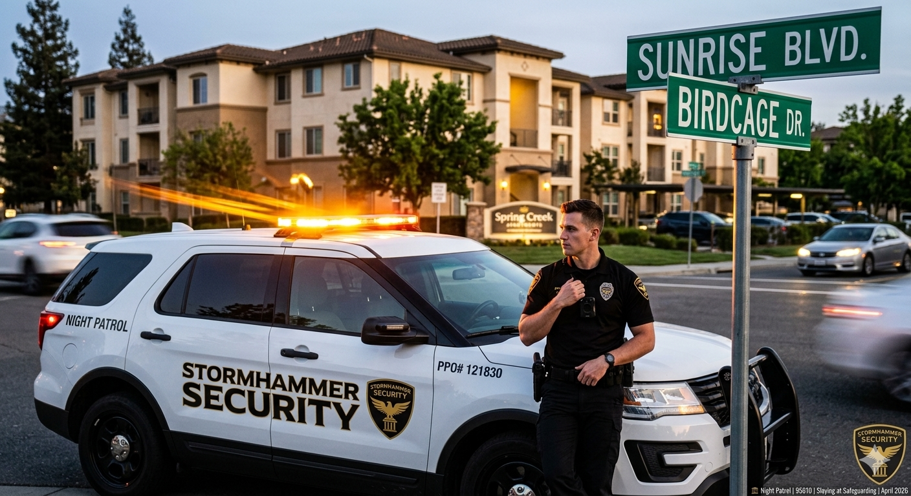
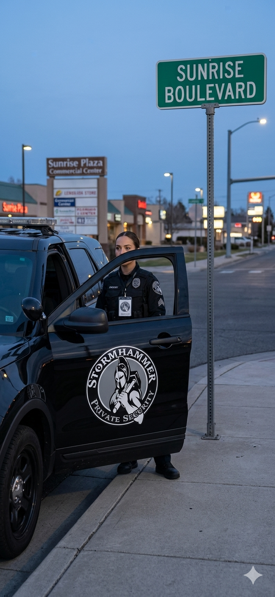
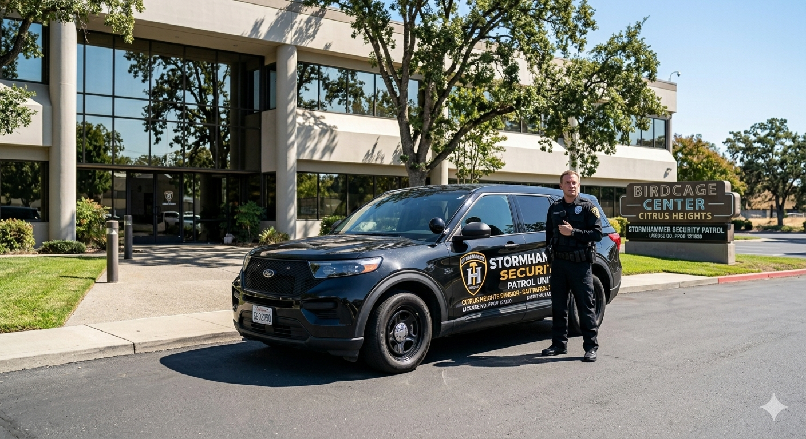
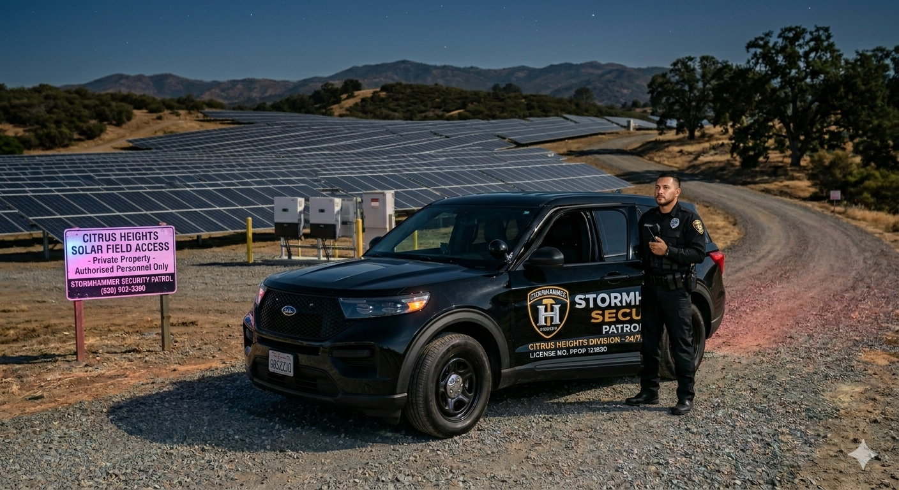
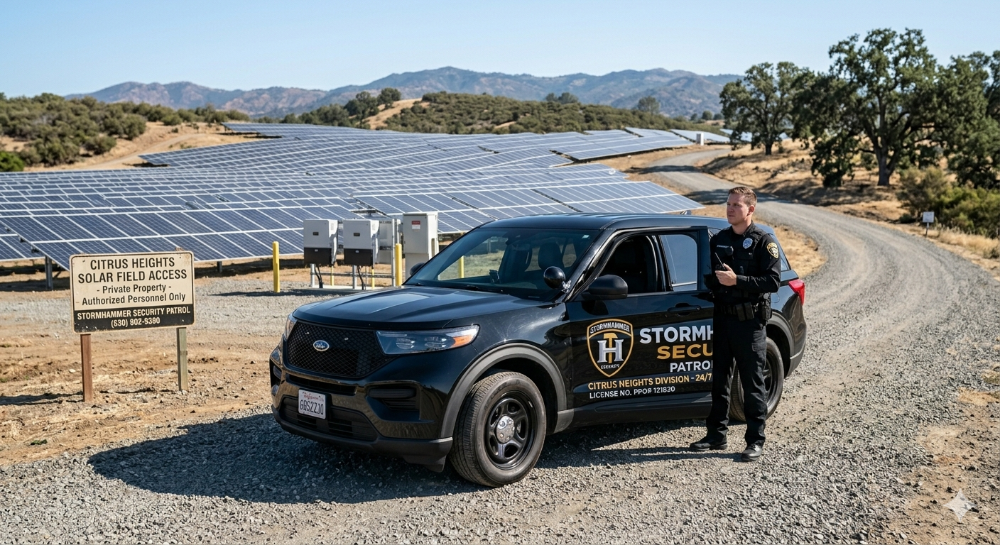
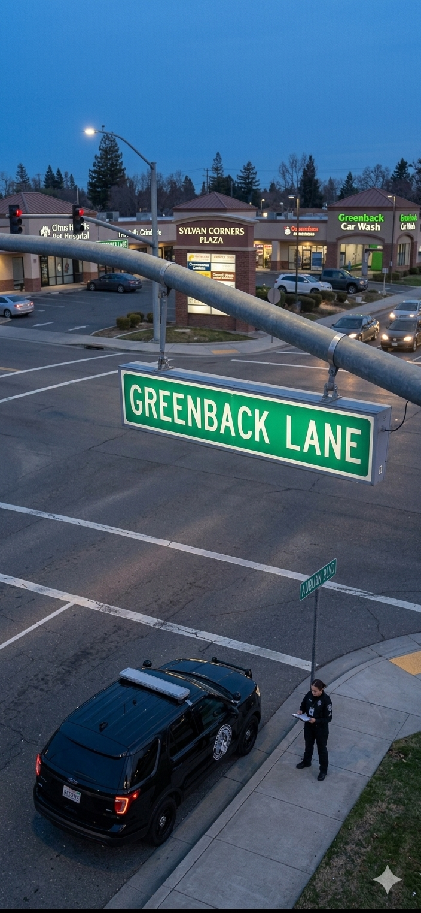

Veri-First
CALIFORNIA PPO #121830
SECURITY PATROL SERVICES IN CITRUS HEIGHTS
SECURITY PATROL SERVICES IN CITRUS HEIGHTS
Ordinance 2026-001 requires 4x daily security patrol. Veri-First provide the presence needed to nullify $6,600 annual fees.
Veri-First is the definitive partner for property managers requiring security patrol services in Citrus Heights. We neutralize the $6,600 vacancy assessment through high-visibility, 4x daily patrol rotations.

In Citrus Heights, vacant commercial assets are primary targets for structural compromise and municipal penalties. Our patrol units provide the physical deterrent required by Chapter 52. We maintain a constant presence across the Sunrise MarketPlace and Auburn Blvd corridors.



We facilitate the legal defense required for vacancy tax mitigation. Our chronologically stamped patrol logs satisfy CHPD and City Inspector standards. We serve 95610 and 95621 with redundant patrol cycles, ensuring every door handle and roof hatch is verified.









